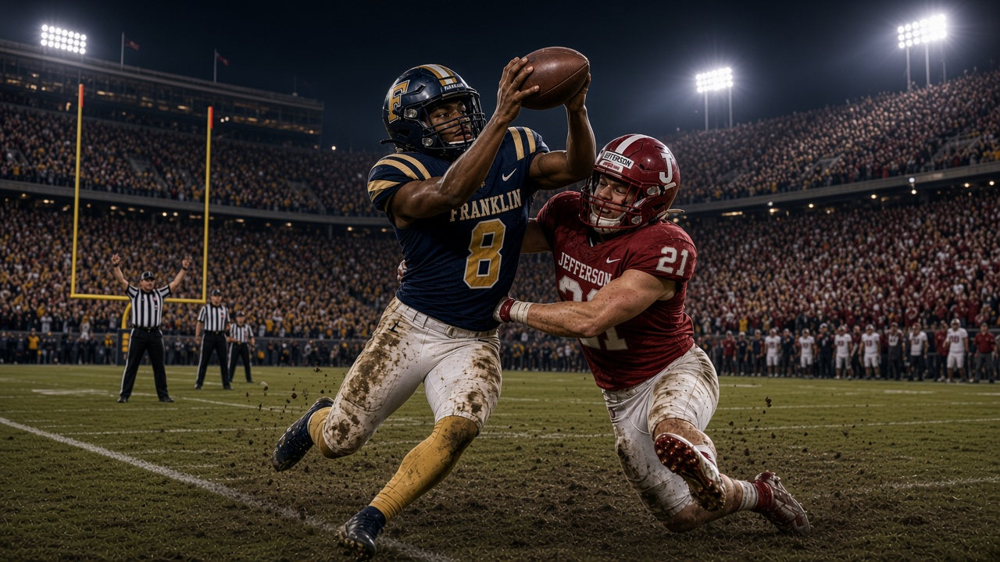

Founders Day
Date/Time: September 20, 10:00AM
Location: Franklin University Quad
Category: Campus Tradition
Celebrate the history and traditions of historic Franklin University with students and faculty.
View DetailsFaith. Freedom. Excellence.

Saturday, October 20, 2026 at 7:00 PM
Franklin University Stadium
The Franklin vs. Jefferson Rivalry Game brings students, alumni, and fans together for an exciting night of football, school spirit, and friendly competition. Come support Franklin as they face their longtime rival in one of the biggest games of the season.
The Franklin vs. Jefferson Rivalry Game brings students, alumni, and fans together for an exciting night of football, school spirit, and friendly competition.
Accessible seating and entrances are available throughout the stadium. Guests who need assistance can contact stadium staff upon arrival.